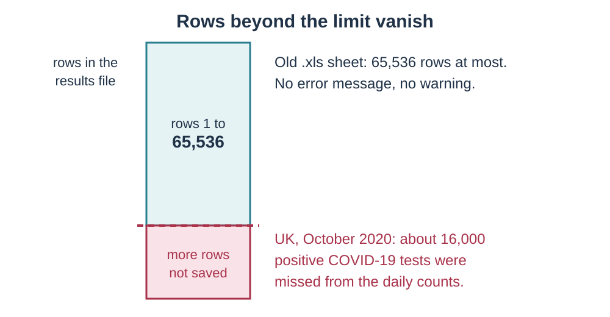
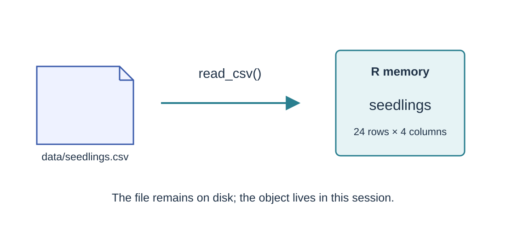

Your supervisor sends a CSV file with lengths of 24 seedlings, and later a results file with many thousands of rows. Remember Day 1: opening a table in a spreadsheet and saving it again can quietly change the data. How do we bring a table into R unchanged, and check that it contains what we think it contains?
Today you will:
make sure R is looking in the right folder for the file;
import a CSV file into a table and inspect its size, columns and types;
tell labels from measurements, and a missing value from a zero;
write down what you checked, so someone else can trust the table.
Day 6 typed values by hand. From today the values come from files. Day 8 calculates and plots from the imported table.
Why not just open it in a spreadsheet?
Day 1: a spreadsheet turned the gene name SEPT2 into the date 2-Sep.
Size limits fail silently too. The old .xls format stops at 65,536 rows; in 2020 this hid about 16,000 positive COVID-19 tests in the UK.
read_csv() reads the file and leaves it unchanged on disk. Every check, such as the number of rows, is a line in your script.

An old .xls sheet holds at most 65,536 rows; the rows beyond the limit are not saved, without any warning.
A file on disk, a table in memory
As on Day 1, a CSV is plain text: a header line with column names, then one line per row.
read_csv() reads it and creates a table object in R’s memory.
Changing the object does not change the file. Changing the file does not change the object until you import again.

read_csv reads the saved seedling file into a 24-row, four-column object in R memory.
Mass (g) and molar mass (g/mol) are both numbers there, but adding them would be meaningless.
Two study folders hold measurement tables with similar columns, one with 24 and one with 18 plant records.
Write down what you checked
A useful import note gives evidence, not just “checked”:
data/seedlings-transfer.csv: 18 rows × 4 columns, 18 distinct plant IDs, 9 control and 9 treated, no missing lengths. Lengths in mm, seven days apart (from data/README.md). Simulated teaching data.
Facts from R: rows, columns, types, IDs, group counts, missing values.
Facts from the dictionary: units, what one row is, how plants were allocated.
Summary
Idea
Key fact
Why code, not a spreadsheet
read_csv() leaves the file unchanged; spreadsheets can silently convert or drop data (row limits)
File vs object
The CSV stays on disk; the imported table lives in R’s memory
Relative path
data/seedlings.csv from the project folder; check with file.exists()
Inspect
dim(), names(), str(), head(), tail(): 24 × 4 for seedlings.csv
Rows and columns
One row = one plant; IDs and groups are labels; lengths are measurements in mm
Missing
NA is not 0; na.rm = TRUE leaves it out of that calculation; report how many
Meaning
Units and design come from data/README.md, not from R
Next (Day 8, transform and plot): calculate each plant’s growth as a new column and draw a figure where every point is a plant.
Now:open the Day 7 exercises. Leave with day07.R, which imports and inspects seedlings.csv and leaf-mass.csv and runs from the top after a restart.